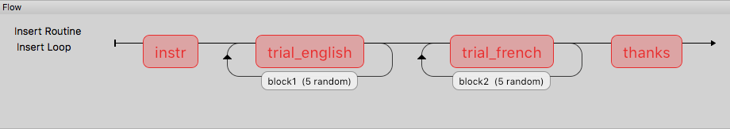

Block designs and counterbalancing
A block design is where we have sets of similar trials organised into blocks rather than having trials interleaved.
- e.g.
- a block of faces to recognise or a block of houses
- a faces oriented correctly and faces inverted
- a block of Stroop task in English and a block in French
1
The natural error
The biggest error that people make with this is to create a Routine (and a loop) for each block of trials:

Then they ask on the forum, “How do I shuffle the blocks on my Flow?”
That is the wrong way to think about it.
2
The right way
Instead of a Routine for each block, create a Routine for all your trials and make it behave differently across the blocks:

Then you can set the conditions files in your blocks loop to control the block-level changes.
The outer “blocks” loop then takes a (meta) “conditions” file that specifies which of the conditions files will be loaded in each block.
3
Multilingual Stroop task
Let’s create the Stroop using blocks of French and english
We need to create a total of 3 conditions files:
- french.xlsx
- english.xlsx
- blocks.xlsx
4
Multilingual Stroop task
english.xlsx:
| word |
letterColour |
congruent |
corrAns |
|---|
| red |
red |
1 |
left |
| red |
green |
0 |
down |
| green |
green |
1 |
down |
| green |
blue |
0 |
right |
| blue |
blue |
1 |
right |
| blue |
red |
1 |
left |
5
Multilingual Stroop task
french.xlsx:
| word |
letterColour |
congruent |
corrAns |
|---|
| rouge |
red |
1 |
left |
| rouge |
green |
0 |
down |
| vert |
green |
1 |
down |
| vert |
blue |
0 |
right |
| bleu |
blue |
1 |
right |
| bleu |
red |
1 |
left |
6
Multilingual Stroop task
blocks.xlsx:
| conditions |
label |
|---|
| english.xlsx |
English |
| french.xlsx |
French |
The label variable isn’t technically needed but it could be used to tell people what block they are about to enter. The point is that you can still use other variables here, defined at the block level of the program, just as in Method A.
7
Multilingual Stroop task
Now we need to set up the variables inside our experiment:
- the inner (trials) loop will have a conditions file = $conditions which is defined in the blocks.xlsx file
- the outer (blocks) loop will have conditions file = blocks.xlsx
8
Multilingual Stroop task

9
Multilingual Stroop task
We could also add a Routine called blockReady like an instructions Routine with:

10
Randomised block design complete!
You’ve sorted out block designs in a relatively neat fashion.
Just keep clear what differs from one block to the next (for a conditions file) and what stays the same (for the Routine definition).
11
Counterbalancing
Counterbalancing your blocks is really just an extension of the blocking scenario, except that you set the blocks to operate in a particular order rather than leaving PsychoPy to randomise them.
)
12
Setting the order
PsychoPy doesn’t handle the ordering for you - you need to decide how to create the orders and how to assign participants.
Now, rather than a single file to specify the blocks you need one for each order that you want the blocks to appear in (and then set the blocks loop to be sequential rather than random to preserve the order you set)
For instance, the bilingual Stroop task you might have groupA with alternating languages, beginning with English, and the groupB participants might have the same but starting with French.
13
How to assign participants to a group
Easiest way is by hand at the start of the run for the participant. The steps are:
- In Experiment Settings add a field for group (which will be A, B, C… for however many orders you need to create)
- For the block loop use that value by calling expInfo[‘group’] using one of the alternatives below:
- $”block” + expInfo[‘group’] + “.xlsx”
- $”block{}.xlsx”.format( expInfo[‘group’] )
14
All done
You can now create trials and blocks in any order, fixed or random.
You’re in complete control (but you need to understand what orders you want!)
Next… Code Components
15